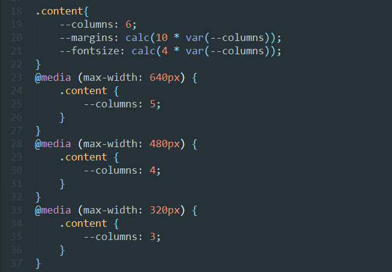
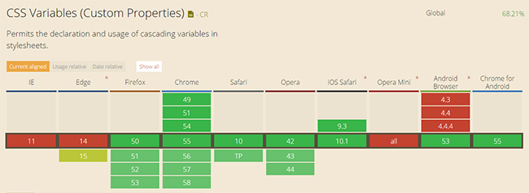

面向未來的 CSS Variable
2017-05-25 星期四 丁酉年 四月三十
【鸡年】乙巳月 壬子日
宜：沐浴 扫舍 余事勿取
忌：斋醮 开市 嫁娶 作灶
CSS Variable 即CSS變量，聊CSS變量之前，我想先來說說Sass和Less,還有Stylus，它們都是目前使用較為普遍的三款CSS預處理框架，我們為什麼要使用它們呢，因為它們都可以讓你在CSS中方便的使用變量、簡單的程序邏輯、函數等在編程時使用的一些基本技巧，這些框架對於這種CSS預處理的技術已經非常成熟，可以讓你的CSS代碼變的更加簡潔、便於維護、在編寫的時候也無需考慮代碼的兼容性。
三大編譯語言的方法
首先他們不約而同的都將自己的名稱做為編譯文件的後綴名，分別是：
由於Sass和Less都使用的是標準的CSS語法，和Stylus有所不同，它們分別支持以下幾種語法：
它們的變量使用方法也有不太一樣的地方：
以上三種框架編譯後的寫法，都會得到以下相同的樣式：
其次就是嵌套方式，有時候我們的類名會引入非常多的父級元素，這樣冗餘的代碼，不僅沒有提升可讀性，而且增加代碼的體積：
如果使用CSS預處理，就可以少些重複的類名，代碼結構層次清晰，顯得會比較優雅：
css變量的方法
那麼CSS變量這邊的情況又是如何？關於變量，其實不外乎定義和使用，我們可以通過這樣一個簡單的例子來了解，例如：
css:
HTML：
這裡定義了三個變量，title、link、text，變量的應用範圍是整個document，實際效果如下：
當然CSS變量也是有應用範圍的，這就是說，你可以覆蓋它們，因為變量的聲明和使用遵循了CSS的層疊特性，類似於普通編程語言中的變量作用域：
CSS：
這樣定義後，p就變成另外一種顏色（黑色）：
CSS變量還可以賦予任何值，例如，你可以把它們放到calc()計算表達式里。這樣可以在不同的情況下對CSS變量重新賦值，比如，在不同的media query里賦不同的值。下面是一些使用場景的例子：
CSS：
根據上面的CSS定義，當瀏覽器窗口小於等於640px時，media query就會發生作用，裡面的CSS變量值發生變化。
CSS變量的用途
在我們構建站點的時候，通常為了站點的可維護性，例如使用換膚，或者某一種配色方案，當中的文字顏色、字體大小、背景色等等會在頁面中多次出現，並被重複使用，當你需要修改的時候，不論是調整配色還是文字大小，都可以通過之前設置好的CSS變量來直接修改。
那麼為什麼我要使用CSS變量呢
相較於傳統的Sass、Less、Stylus等預處理變量，CSS變量有它的優勢：
1.CSS變量直接修改，立即生效，而傳統與處理器變量編譯後無法直接更改
2.CSS變量能夠像CSS本身一樣，能夠繼承，能夠組合使用，可以作用需要的地方即作用域
3.配合上JS，可以方便的讀寫和控制
4.語法上類似CSS和JS，方便快速上手開發，不需要像其它傳統預處理變量那樣，需要學習各種語法，開發和交接成本低
5.CSS變量本身包換了語義的信息，在CSS文件中能夠被識別和理解。
6.當多個媒介查詢的時候，重複定義的代碼量會成倍增加。因為CSS變量可以傳遞，當我們使用響應式的時候，我們只需要修改一個CSS屬性值即可。下圖中我們只需要修改--columns這一個變量即可。

css變量支持的情況
下面是目前瀏覽器支持的情況，雖然IE依舊不能夠支持，但是如果是在移動端，還是可以來嘗試一下的，當然如果有興趣的可以關注一下：cssnext，myth這個兩個插件，可以讓我們提前使用CSS變量的一些方法：

總結
總的來說，CSS變量還是能夠針對性的解決一些項目中的實際問題：
比如一個站點的配色，如果只是幾個常用的顏色被應用到多個地方，我們完全可以通過CSS變量來輕鬆修改，並不需要用到Less、Sass、Stylus這樣"複雜"的編譯系統。
在響應式代碼中不需要重複聲明變量，在Less和Sass中也沒辦法做到像CSS變量那樣簡潔優雅的代碼。
最後，寫這篇文章並不是想說CSS變量要取代誰和誰，而是，我們在開發過程中，應該思考自己需要通過工具解決某個實際存存在的問題！

微信打賞

支付寶打賞